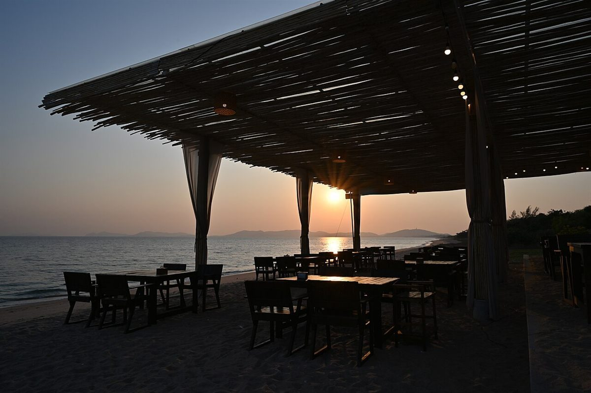
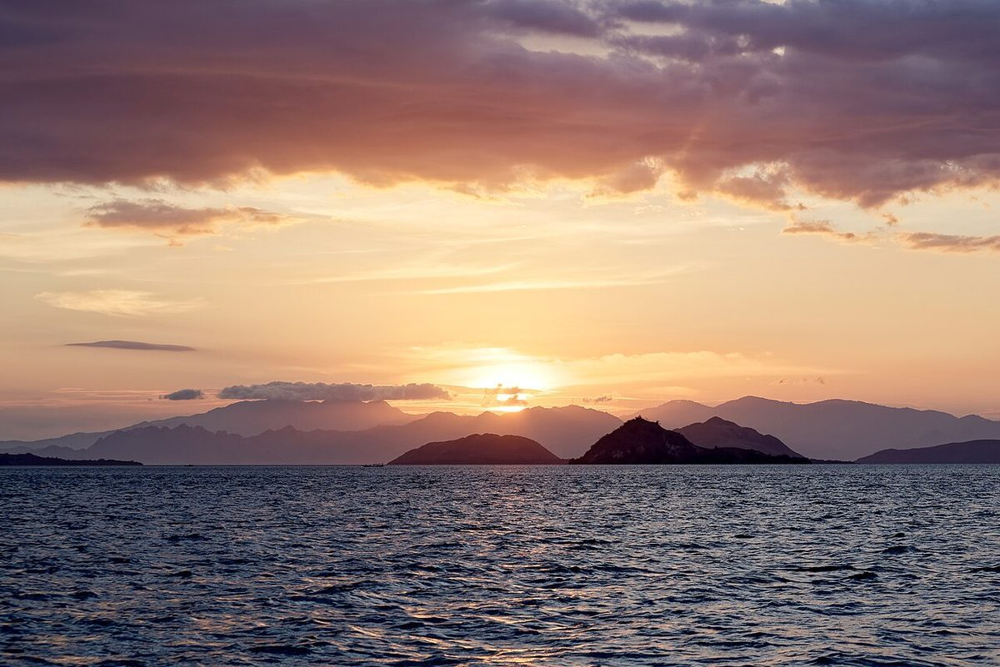

1岸から1海里
店のこと
お店について確認できているのは、所在地とInstagramのアカウントだけです。
「想像してみる」部分は制作側の想像です。お店の実際の様子・考え・提供内容とは関係ありません。
確認できていること
- 店名は「offshore cafe and works」、業種はカフェ
- 所在地は和歌山県有田郡湯浅町湯浅3035(〒643-0004)
- 電話番号はなし。連絡はInstagramから
- 営業時間・定休日・メニュー・価格・ご予約・駐車場は準備中
- 「works」が何を指すかは未確認

想像してみる
「and」でつながる三つの語
由来は分かりません。制作側は、cafe と works を and がつなぐ店名の並びに目を留めました。works の中身は分からないので、ここでは想像を広げず、「いつか Instagram で確かめてみたい」とだけ記しておきます。


